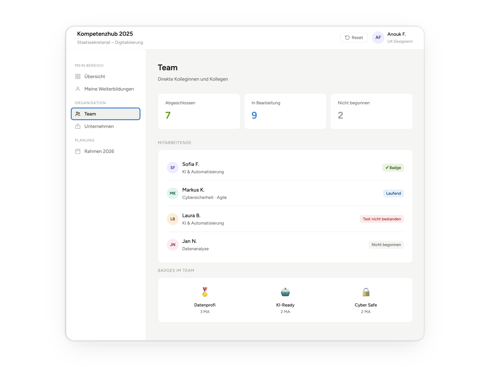
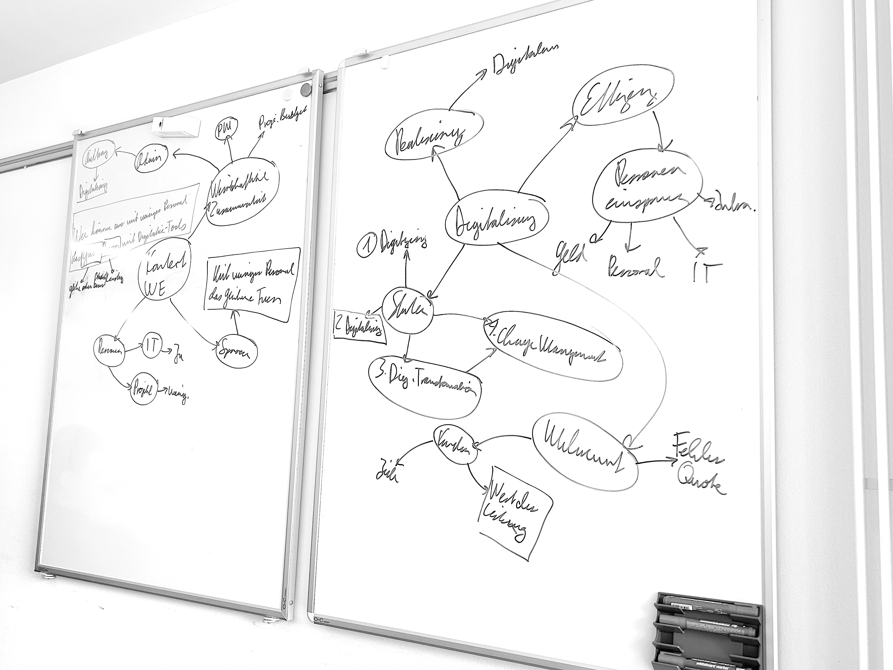
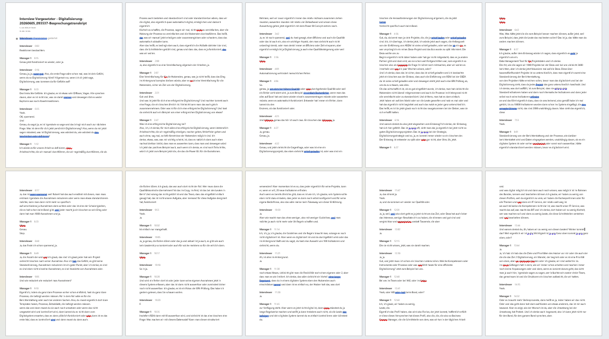
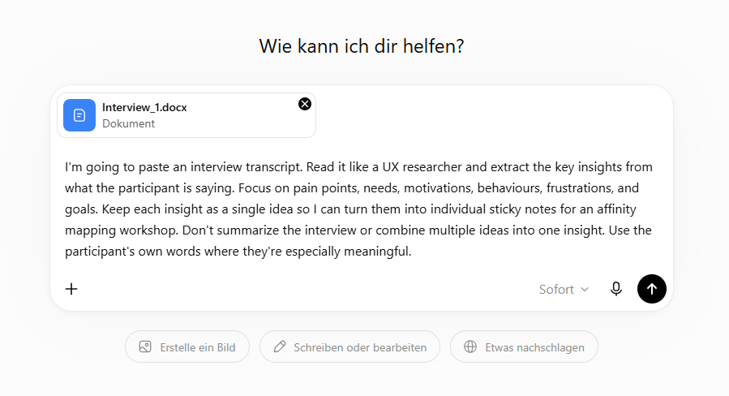
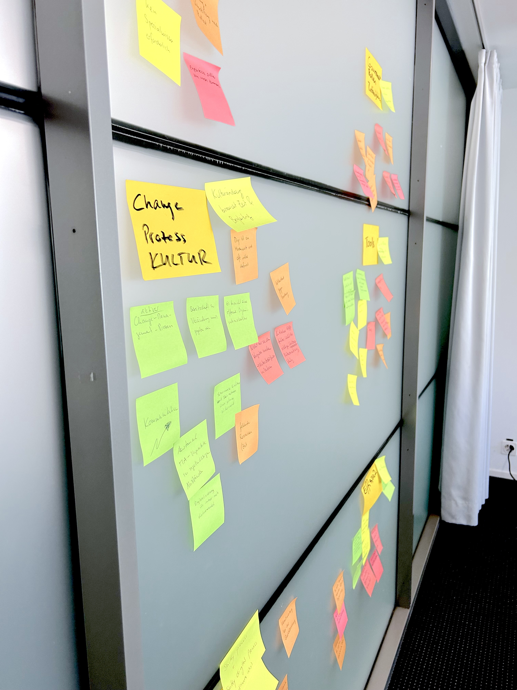
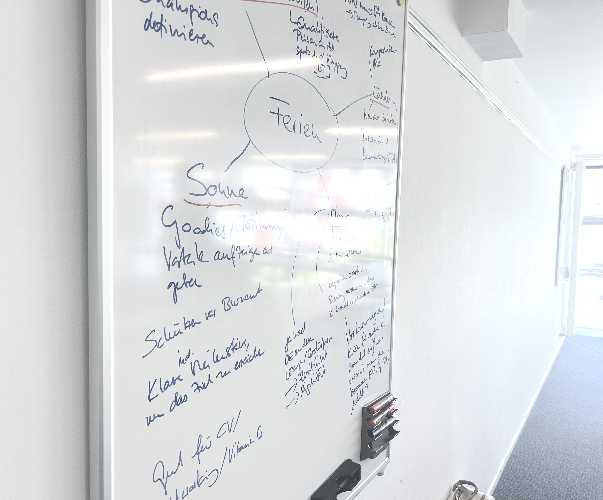
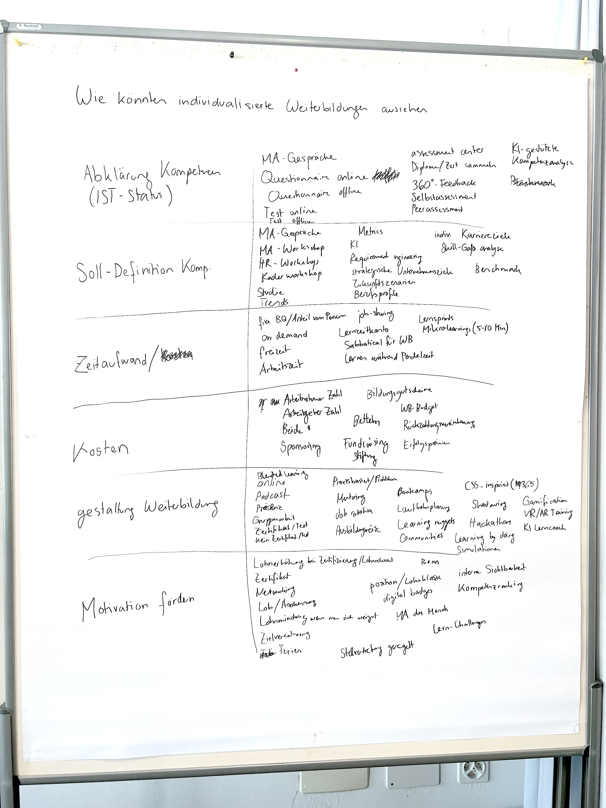
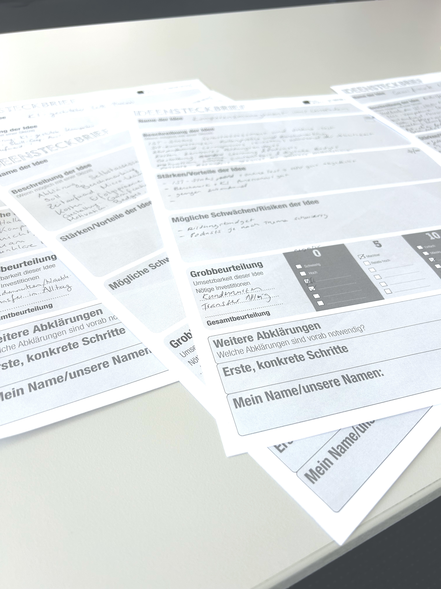
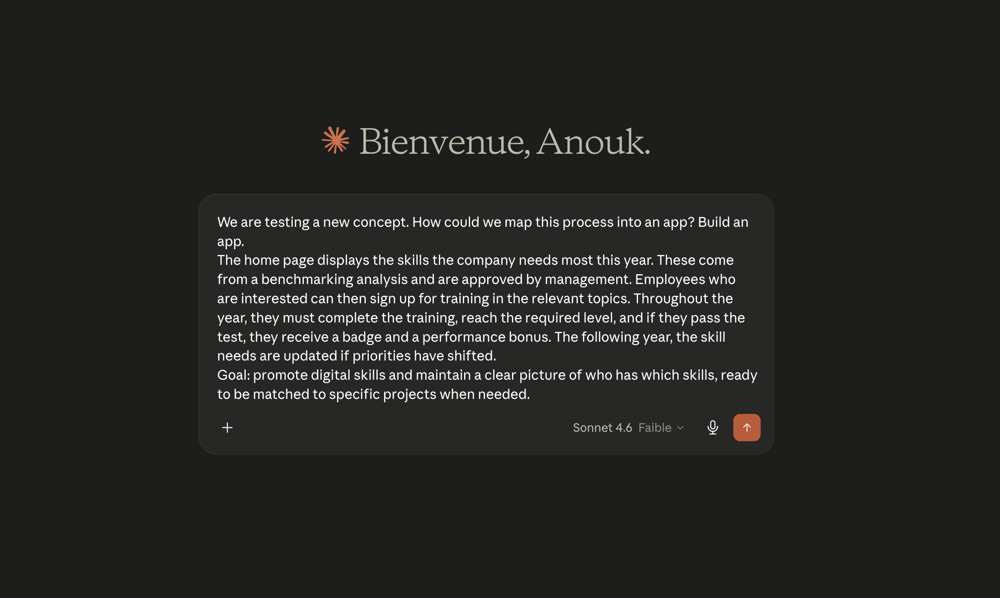
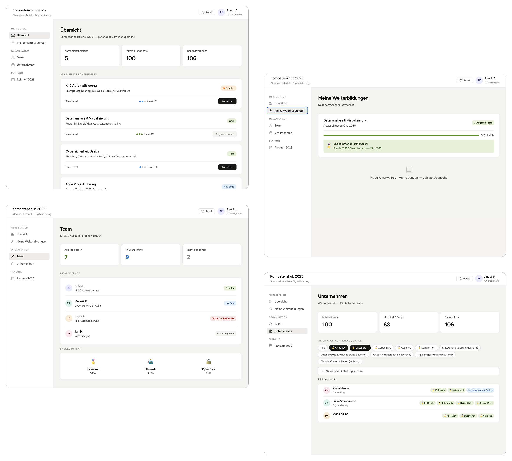

Case Study
Upskilling the Public Sector
A Design Thinking sprint exploring how personalized learning and gamification can support digital transformation within the Swiss Federal Administration.

Overview
A short sprint for a very large transformation challenge.
Digital transformation has been a strategic priority within the Swiss Federal Administration for decades, yet many organizations still struggle to translate it into concrete action. Drawing on a challenge I observed in my daily work, our interdisciplinary team explored how personalized learning could help employees build the skills needed to navigate this transformation during a 3-day Design Thinking sprint.
Product
Concept for a learning platform where employees are encouraged and rewarded for developing the skills the organization actually needs.
Users
Federal employees & HR
Team
5 interdisciplinary participants with backgrounds in IT, Project Management and UX Design.
Problem
Everyone wants digitalization. Nobody knows exactly what it means.

Unclear direction
Digital transformation is a strategic priority, but a clear vision is often missing.
Limited resources
Employees are expected to drive change with limited resources, unclear expectations and little practical guidance.
Huge scope
The scale of the organization makes digital transformation difficult to coordinate and prioritize.
Role
Design Thinking team member responsible for user research, AI-supported insight synthesis, ideation and interactive prototyping. I also introduced the organizational challenge that became the team's design brief.
Constraint
The challenge was intentionally broad while the timeline was exceptionally short. The team had to narrow the problem, conduct research, generate ideas and build a prototype within a three-day Design Thinking sprint.
01
Empathize
How do people experience digital transformation?
To better understand the challenges behind digital transformation, each team member conducted interviews with employees across different roles within the Swiss Federal Administration. Together, we collected perspectives from 4 managers, 5 employees and 1 subject matter experts.
Interview recordings were automatically transcribed by Microsoft Teams, and AI helped extract key insights before the team reviewed and synthesized the findings together.
Challenge
Designing interview questions before knowing which direction the research would lead.
Solution
Using a structured interview guide while remaining flexible enough to explore unexpected insights.
Interview Material

Prompting in ChatGPT to extract insights from interview transcripts

02
Define
Finding the right problem to solve.
Interview findings were grouped into themes using affinity mapping. Together, we identified recurring pain points, challenged our assumptions with AI, and translated the strongest opportunities into "How Might We" questions:
How might we map employees' skills?
How might personalized learning experiences look?
How might employees be guided through this transformation
journey?
Challenge
Identifying one meaningful design opportunity among many different pain points.
Solution
We clustered interview insights, mapped recurring pain points and formulated "How Might We" questions to identify the opportunity with the greatest design potential.
Digital meets analog.

03
Ideate
Exploring as many ideas as possible.
Ideas were generated collaboratively and enriched with AI using techniques such as the Morphological Box and Random Word. The concepts were then discussed, voted on and evaluated against predefined criteria before refining the strongest solution.
Challenge
Breaking free from our own assumptions shaped by our daily work to generate innovative ideas.
Solution
We used the Morphological Box and Random Word techniques to deliberately challenge our thinking. AI further expanded the exploration by suggesting additional creative and disruptive concepts.
Random Word Method, Morphological box and priorisation



04
Prototype
20 minutes to bring the concept to life.
While part of the team refined the personalized learning concept, I focused on creating an interactive prototype of the proposed skills management platform. The platform encourages and rewards employees for developing the skills the organization actually needs most. Without AI, creating such a prototype in only 20 minutes would never have been possible.
Challenge
Transforming a concept into an interactive experience in just 20 minutes.
Solution
Using Claude as a development partner, I was able to build and refine a functional prototype that could be explored and tested by users with only a few prompts.
Prompting in Claude

20 min prototype

05
Test
A reality check made us hesitate.
The prototype was presented to another Design Thinking team to gather feedback. Rather than discussing the interface itself, the conversation quickly shifted to organizational adoption and the barriers that could prevent such a platform from succeeding. It also became clear that a concept like this could be costly to implement at scale.
Challenge
Encouraging skill development without creating resistance around transparency and employee data.
Learning
A successful implementation would require organizational change management and clear communication about how employee data is used.
The Prototype
A clickable concept for personalized learning.
Try it out!
Reflection
Skills I'll carry forward.
Looking back, what stayed with me is how far we managed to go in only three days, and how much the techniques and AI workflows I discovered during the sprint still help me in my everyday work.